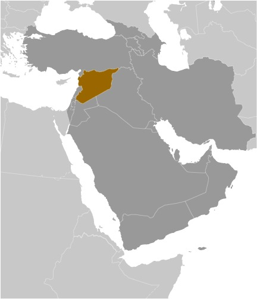
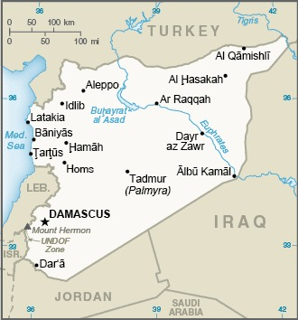
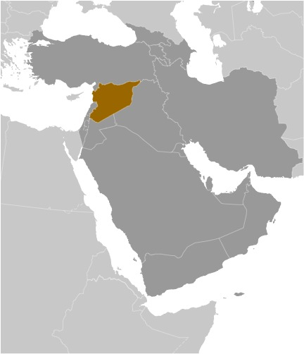
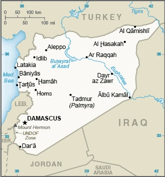

-
Introduction :: Syria
-
Background:
Following World War I, France acquired a mandate over the northern portion of the former Ottoman Empire province of Syria. The French administered the area as Syria until granting it independence in 1946. The new country lacked political stability and experienced a series of military coups. Syria united with Egypt in February 1958 to form the United Arab Republic. In September 1961, the two entities separated, and the Syrian Arab Republic was reestablished. In the 1967 Arab-Israeli War, Syria lost the Golan Heights region to Israel. During the 1990s, Syria and Israel held occasional, albeit unsuccessful, peace talks over its return. In November 1970, Hafiz al-ASAD, a member of the socialist Ba'ath Party and the minority Alawi sect, seized power in a bloodless coup and brought political stability to the country. Following the death of President Hafiz al-ASAD, his son, Bashar al-ASAD, was approved as president by popular referendum in July 2000. Syrian troops - stationed in Lebanon since 1976 in an ostensible peacekeeping role - were withdrawn in April 2005. During the July-August 2006 conflict between Israel and Hizballah, Syria placed its military forces on alert but did not intervene directly on behalf of its ally Hizballah. In May 2007, Bashar al-ASAD's second term as president was approved by popular referendum.
Influenced by major uprisings that began elsewhere in the region, and compounded by additional social and economic factors, antigovernment protests broke out first in the southern province of Dar'a in March 2011 with protesters calling for the repeal of the restrictive Emergency Law allowing arrests without charge, the legalization of political parties, and the removal of corrupt local officials. Demonstrations and violent unrest spread across Syria with the size and intensity of protests fluctuating. The government responded to unrest with a mix of concessions - including the repeal of the Emergency Law, new laws permitting new political parties, and liberalizing local and national elections - and with military force and detentions. The government's efforts to quell unrest and armed opposition activity led to extended clashes and eventually civil war between government forces, their allies, and oppositionists.
International pressure on the ASAD regime intensified after late 2011, as the Arab League, the EU, Turkey, and the US expanded economic sanctions against the regime and those entities that support it. In December 2012, the Syrian National Coalition, was recognized by more than 130 countries as the sole legitimate representative of the Syrian people. In September 2015, Russia launched a military intervention on behalf of the ASAD regime, and domestic and foreign government-aligned forces recaptured swaths of territory from opposition forces, and eventually the country’s second largest city, Aleppo, in December 2016, shifting the conflict in the regime’s favor. The regime, with this foreign support, also recaptured opposition strongholds in the Damascus suburbs and the southern province of Dar’a in 2018. The government lacks territorial control over much of the northeastern part of the country, which is dominated by the predominantly Kurdish Syrian Democratic Forces (SDF). The SDF has expanded its territorial hold over much of the northeast since 2014 as it has captured territory from the Islamic State of Iraq and Syria. Since 2016, Turkey has also conducted three large-scale military operations into Syria, capturing territory along Syria's northern border in the provinces of Aleppo, Ar Raqqah, and Al Hasakah. Political negotiations between the government and opposition delegations at UN-sponsored Geneva conferences since 2014 have failed to produce a resolution of the conflict. Since early 2017, Iran, Russia, and Turkey have held separate political negotiations outside of UN auspices to attempt to reduce violence in Syria. According to an April 2016 UN estimate, the death toll among Syrian Government forces, opposition forces, and civilians was over 400,000, though other estimates placed the number well over 500,000. As of December 2019, approximately 6 million Syrians were internally displaced. Approximately 11.1 million people were in need of humanitarian assistance across the country, and an additional 5.7 million Syrians were registered refugees in Turkey, Jordan, Iraq, Egypt, and North Africa. The conflict in Syria remains one of the largest humanitarian crises worldwide.
-
Geography :: Syria
-
Location:Middle East, bordering the Mediterranean Sea, between Lebanon and TurkeyGeographic coordinates:35 00 N, 38 00 EMap references:Middle EastArea:total: 187,437 sq kmland: 185,887 sq kmwater: 1,550 sq km
note: includes 1,295 sq km of Israeli-occupied territory
country comparison to the world: 89Area - comparative:slightly more than 1.5 times the size of PennsylvaniaArea comparison map: The World Factbook Field Image ModalMiddle East :: Syria Print
The World Factbook Field Image ModalMiddle East :: Syria Print Image DescriptionLand boundaries:total: 2,343 kmborder countries (5): Iraq 599 km, Israel 79 km, Jordan 362 km, Lebanon 394 km, Turkey 909 kmCoastline:193 kmMaritime claims:territorial sea: 12 nmcontiguous zone: 24 nmClimate:mostly desert; hot, dry, sunny summers (June to August) and mild, rainy winters (December to February) along coast; cold weather with snow or sleet periodically in DamascusTerrain:primarily semiarid and desert plateau; narrow coastal plain; mountains in westElevation:mean elevation: 514 mlowest point: unnamed location near Lake Tiberias -208 mhighest point: Mount Hermon (Jabal a-Shayk) 2,814 mNatural resources:petroleum, phosphates, chrome and manganese ores, asphalt, iron ore, rock salt, marble, gypsum, hydropowerLand use:agricultural land: 75.8% (2011 est.)arable land: 25.4% (2011 est.) / permanent crops: 5.8% (2011 est.) / permanent pasture: 44.6% (2011 est.)forest: 2.7% (2011 est.)other: 21.5% (2011 est.)Irrigated land:14,280 sq km (2012)Population distribution:significant population density along the Mediterranean coast; larger concentrations found in the major cities of Damascus, Aleppo (the country's largest city), and Hims (Homs); more than half of the population lives in the coastal plain, the province of Halab, and the Euphrates River valley
Image DescriptionLand boundaries:total: 2,343 kmborder countries (5): Iraq 599 km, Israel 79 km, Jordan 362 km, Lebanon 394 km, Turkey 909 kmCoastline:193 kmMaritime claims:territorial sea: 12 nmcontiguous zone: 24 nmClimate:mostly desert; hot, dry, sunny summers (June to August) and mild, rainy winters (December to February) along coast; cold weather with snow or sleet periodically in DamascusTerrain:primarily semiarid and desert plateau; narrow coastal plain; mountains in westElevation:mean elevation: 514 mlowest point: unnamed location near Lake Tiberias -208 mhighest point: Mount Hermon (Jabal a-Shayk) 2,814 mNatural resources:petroleum, phosphates, chrome and manganese ores, asphalt, iron ore, rock salt, marble, gypsum, hydropowerLand use:agricultural land: 75.8% (2011 est.)arable land: 25.4% (2011 est.) / permanent crops: 5.8% (2011 est.) / permanent pasture: 44.6% (2011 est.)forest: 2.7% (2011 est.)other: 21.5% (2011 est.)Irrigated land:14,280 sq km (2012)Population distribution:significant population density along the Mediterranean coast; larger concentrations found in the major cities of Damascus, Aleppo (the country's largest city), and Hims (Homs); more than half of the population lives in the coastal plain, the province of Halab, and the Euphrates River valleynote: the ongoing civil war has altered the population distribution
Natural hazards:dust storms, sandstorms
volcanism: Syria's two historically active volcanoes, Es Safa and an unnamed volcano near the Turkish border have not erupted in centuries
Environment - current issues:deforestation; overgrazing; soil erosion; desertification; depletion of water resources; water pollution from raw sewage and petroleum refining wastes; inadequate potable waterEnvironment - international agreements:party to: Biodiversity, Climate Change, Climate Change-Kyoto Protocol, Desertification, Endangered Species, Hazardous Wastes, Ozone Layer Protection, Ship Pollution, Wetlandssigned, but not ratified: Environmental ModificationGeography - note:the capital of Damascus - located at an oasis fed by the Barada River - is thought to be one of the world's oldest continuously inhabited cities; there are 42 Israeli settlements and civilian land use sites in the Israeli-controlled Golan Heights (2017) -
People and Society :: Syria
-
Population:19,398,448 (July 2020 est.)
note: approximately 22,000 Israeli settlers live in the Golan Heights (2016)
country comparison to the world: 63Nationality:noun: Syrian(s)adjective: SyrianEthnic groups:Arab ~50%, Alawite ~15%, Kurd ~10%, Levantine ~10%, other ~15% (includes Druze, Ismaili, Imami, Nusairi, Assyrian, Turkoman, Armenian)Languages:Arabic (official), Kurdish, Armenian, Aramaic, Circassian, French, EnglishReligions:Muslim 87% (official; includes Sunni 74% and Alawi, Ismaili, and Shia 13%), Christian 10% (includes Orthodox, Uniate, and Nestorian), Druze 3%, Jewish (few remaining in Damascus and Aleppo)note: the Christian population may be considerably smaller as a result of Christians fleeing the country during the ongoing civil warMENA religious affiliation: PDFAge structure:0-14 years: 33.47% (male 3,323,072/female 3,170,444)15-24 years: 19.34% (male 1,872,903/female 1,879,564)25-54 years: 37.31% (male 3,558,241/female 3,679,596)55-64 years: 5.41% (male 516,209/female 534,189)65 years and over: 4.46% (male 404,813/female 459,417) (2020 est.)population pyramid: The World Factbook Field Image ModalMiddle East :: Syria Print
The World Factbook Field Image ModalMiddle East :: Syria Print Image DescriptionThis is the population pyramid for Syria. A population pyramid illustrates the age and sex structure of a country's population and may provide insights about political and social stability, as well as economic development. The population is distributed along the horizontal axis, with males shown on the left and females on the right. The male and female populations are broken down into 5-year age groups represented as horizontal bars along the vertical axis, with the youngest age groups at the bottom and the oldest at the top. The shape of the population pyramid gradually evolves over time based on fertility, mortality, and international migration trends.
Image DescriptionThis is the population pyramid for Syria. A population pyramid illustrates the age and sex structure of a country's population and may provide insights about political and social stability, as well as economic development. The population is distributed along the horizontal axis, with males shown on the left and females on the right. The male and female populations are broken down into 5-year age groups represented as horizontal bars along the vertical axis, with the youngest age groups at the bottom and the oldest at the top. The shape of the population pyramid gradually evolves over time based on fertility, mortality, and international migration trends.
For additional information, please see the entry for Population pyramid on the Definitions and Notes page under the References tab.Dependency ratios:total dependency ratio: 55.4youth dependency ratio: 47.8elderly dependency ratio: 7.6potential support ratio: 13.2 (2020 est.)Median age:total: 23.5 yearsmale: 23 yearsfemale: 24 years (2020 est.)country comparison to the world: 177Population growth rate:4.25% NA (2020 est.)country comparison to the world: 1Birth rate:23.8 births/1,000 population (2020 est.)country comparison to the world: 50Death rate:4.5 deaths/1,000 population (2020 est.)country comparison to the world: 206Net migration rate:27.1 migrant(s)/1,000 population NA (2020 est.)country comparison to the world: 1Population distribution:significant population density along the Mediterranean coast; larger concentrations found in the major cities of Damascus, Aleppo (the country's largest city), and Hims (Homs); more than half of the population lives in the coastal plain, the province of Halab, and the Euphrates River valleynote: the ongoing civil war has altered the population distribution
Urbanization:urban population: 55.5% of total population (2020)rate of urbanization: 1.43% annual rate of change (2015-20 est.)total population growth rate v. urban population growth rate, 2000-2030: PDFMajor urban areas - population:2.392 million DAMASCUS (capital), 1.917 million Aleppo, 1.336 million Hims (Homs), 922,000 Hamah (2020)Sex ratio:at birth: 1.06 male(s)/female0-14 years: 1.05 male(s)/female15-24 years: 1 male(s)/female25-54 years: 0.97 male(s)/female55-64 years: 0.97 male(s)/female65 years and over: 0.88 male(s)/femaletotal population: 1 male(s)/female (2020 est.)Maternal mortality rate:31 deaths/100,000 live births (2017 est.)country comparison to the world: 110Infant mortality rate:total: 16.5 deaths/1,000 live birthsmale: 18.1 deaths/1,000 live birthsfemale: 14.7 deaths/1,000 live births (2020 est.)country comparison to the world: 91Life expectancy at birth:total population: 73.7 yearsmale: 72.3 yearsfemale: 75.3 years (2020 est.)country comparison to the world: 143Total fertility rate:2.9 children born/woman (2020 est.)country comparison to the world: 54Drinking water source:improved: urban: 99% of populationrural: 99.3% of populationtotal: 99.4% of populationunimproved: urban: 1% of populationrural: 0.7% of populationtotal: 0.6% of population (2017 est.)Physicians density:1.29 physicians/1,000 population (2016)Hospital bed density:1.4 beds/1,000 population (2017)Sanitation facility access:improved: urban: 99.6% of populationrural: 98.6% of populationtotal: 99.1% of populationunimproved: urban: 0.4% of populationrural: 1.4% of populationtotal: 0.9% of population (2017 est.)HIV/AIDS - adult prevalence rate:<.1% (2019)HIV/AIDS - people living with HIV/AIDS:<1000 (2019)HIV/AIDS - deaths:<100 (2019)Obesity - adult prevalence rate:27.8% (2016)country comparison to the world: 35Children under the age of 5 years underweight:5.8% (2009/10)country comparison to the world: 79Education expenditures:NALiteracy:definition: age 15 and over can read and writetotal population: 86.4%male: 91.7%female: 81% (2015)School life expectancy (primary to tertiary education):total: 9 yearsmale: 9 yearsfemale: 9 years (2013)Unemployment, youth ages 15-24:total: 35.8%male: 26.6%female: 71.1% (2011 est.)country comparison to the world: 19 -
Government :: Syria
-
Country name:conventional long form: Syrian Arab Republicconventional short form: Syrialocal long form: Al Jumhuriyah al Arabiyah as Suriyahlocal short form: Suriyahformer: United Arab Republic (with Egypt)etymology: name ultimately derived from the ancient Assyrians who dominated northern Mesopotamia, but whose reach also extended westward to the Levant; over time, the name came to be associated more with the western areaGovernment type:presidential republic; highly authoritarian regimeCapital:name: Damascusgeographic coordinates: 33 30 N, 36 18 Etime difference: UTC+2 (7 hours ahead of Washington, DC, during Standard Time)daylight saving time: +1hr, begins midnight on the last Friday in March; ends at midnight on the last Friday in Octoberetymology: Damascus is a very old city; its earliest name, Temeseq, first appears in an Egyptian geographical list of the 15th century B.C., but the meaning is uncertainAdministrative divisions:14 provinces (muhafazat, singular - muhafazah); Al Hasakah, Al Ladhiqiyah (Latakia), Al Qunaytirah, Ar Raqqah, As Suwayda', Dar'a, Dayr az Zawr, Dimashq (Damascus), Halab (Aleppo), Hamah, Hims (Homs), Idlib, Rif Dimashq (Damascus Countryside), TartusIndependence:17 April 1946 (from League of Nations mandate under French administration)National holiday:Independence Day (Evacuation Day), 17 April (1946); note - celebrates the leaving of the last French troops and the proclamation of full independenceConstitution:history: several previous; latest issued 15 February 2012, passed by referendum and effective 27 February 2012amendments: proposed by the president of the republic or by one third of the People’s Assembly members; following review by a special Assembly committee, passage requires at least three-quarters majority vote by the Assembly and approval by the presidentLegal system:mixed legal system of civil and Islamic (sharia) law (for family courts)International law organization participation:has not submitted an ICJ jurisdiction declaration; non-party state to the ICCCitizenship:citizenship by birth: nocitizenship by descent only: the father must be a citizen of Syria; if the father is unknown or stateless, the mother must be a citizen of Syriadual citizenship recognized: yesresidency requirement for naturalization: 10 yearsSuffrage:18 years of age; universalExecutive branch:chief of state: President Bashar al-ASAD (since 17 July 2000); Vice President Najah al-ATTAR (since 23 March 2006)head of government: Prime Minister Hussein ARNOUS (since 30 August 2020); Deputy Prime Minister Ali Abdullah AYOUB (Gen.) (since 30 August 2020)cabinet: Council of Ministers appointed by the presidentelections/appointments: president directly elected by simple majority popular vote for a 7-year term (eligible for a second term); election last held on 3 June 2014 (next to be held in June 2021); the president appoints the vice presidents, prime minister, and deputy prime ministerselection results: Bashar al-ASAD elected president; percent of vote - Bashar al-ASAD (Ba'th Party) 88.7%, Hassan al-NOURI (independent) 4.3%, Maher HAJJER (independent) 3.2%, other/invalid 3.8%Legislative branch:description: unicameral People's Assembly or Majlis al-Shaab (250 seats; members directly elected in multi-seat constituencies by simple majority preferential vote to serve 4-year terms)elections: last held on 19 July 2020 (next to be held in 2024)election results: percent of vote by party - NPF 80%, other 20%; seats by party - NPF 200, other 50; composition - men 217, women 33, percent of women 13.2%Judicial branch:highest courts: Court of Cassation (organized into civil, criminal, religious, and military divisions, each with 3 judges); Supreme Constitutional Court (consists of 7 members)judge selection and term of office: Court of Cassation judges appointed by the Supreme Judicial Council (SJC), a judicial management body headed by the minister of justice with 7 members, including the national president; judge tenure NA; Supreme Constitutional Court judges nominated by the president and appointed by the SJC; judges serve 4-year renewable termssubordinate courts: courts of first instance; magistrates' courts; religious and military courts; Economic Security Court; Counterterrorism Court (established June 2012)Political parties and leaders:legal parties/alliances:
Arab Socialist Ba'ath Party [Bashar al-ASAD, regional secretary]
Arab Socialist Renaissance (Ba'th) Party [President Bashar al-ASAD]
Arab Socialist Union of Syria or ASU [Safwan al-QUDSI]
National Progressive Front or NPF [Bashar al-ASAD, Suleiman QADDAH] (alliance includes Arab Socialist Renaissance (Ba'th) Party, Socialist Unionist Democratic Party)
Socialist Unionist Democratic Party [Fadlallah Nasr al-DIN]
Syrian Communist Party (two branches) [Wissal Farha BAKDASH, Yusuf Rashid FAYSAL]
Syrian Social Nationalist Party or SSNP [Ali HAIDAR]
Unionist Socialist Party [Fayez ISMAIL]
Major Kurdish parties
Kurdish Democratic Union Party or PYD [Shahoz HASAN and Aysha HISSO]
Kurdish National Council [Sa'ud MALA]
other: Syrian Democratic Party [Mustafa QALAAJI]International organization participation:ABEDA, AFESD, AMF, CAEU, FAO, G-24, G-77, IAEA, IBRD, ICAO, ICC (national committees), ICRM, ICSID, IDA, IDB, IFAD, IFC, IFRCS, IHO, ILO, IMF, IMO, Interpol, IOC, IPU, ISO, ITSO, ITU, LAS, MIGA, NAM, OAPEC, OIC, OPCW, UN, UNCTAD, UNESCO, UNIDO, UNRWA, UNWTO, UPU, WBG, WCO, WFTU (NGOs), WHO, WIPO, WMO, WTO (observer)Diplomatic representation in the US:chief of mission: Ambassador (vacant)chancery: 2215 Wyoming Avenue NW, Washington, DC 20008telephone: [1] (202) 232-6313FAX: [1] (202) 234-9548note: Embassy ceased operations and closed on 18 March 2014
Diplomatic representation from the US:chief of mission: Ambassador (vacant); note - on 6 February 2012, the US closed its embassy in Damascus; Czechia serves as a protecting power for US interests in Syriatelephone: [963] (11) 3391-4444embassy: Abou Roumaneh, 2 Al Mansour Street, Damascusmailing address: P. O. Box 29, DamascusFAX: [963] (11) 3391-3999Flag description:three equal horizontal bands of red (top), white, and black; two small, green, five-pointed stars in a horizontal line centered in the white band; the band colors derive from the Arab Liberation flag and represent oppression (black), overcome through bloody struggle (red), to be replaced by a bright future (white); identical to the former flag of the United Arab Republic (1958-1961) where the two stars represented the constituent states of Syria and Egypt; the current design dates to 1980note: similar to the flag of Yemen, which has a plain white band, Iraq, which has an Arabic inscription centered in the white band, and that of Egypt, which has a gold Eagle of Saladin centered in the white band
National symbol(s):hawk; national colors: red, white, black, greenNational anthem:name: "Humat ad-Diyar" (Guardians of the Homeland)lyrics/music: Khalil Mardam BEY/Mohammad Salim FLAYFEL and Ahmad Salim FLAYFELnote: adopted 1936, restored 1961; between 1958 and 1961, while Syria was a member of the United Arab Republic with Egypt, the country had a different anthem
-
Economy :: Syria
-
Economic overview:
Syria's economy has deeply deteriorated amid the ongoing conflict that began in 2011, declining by more than 70% from 2010 to 2017. The government has struggled to fully address the effects of international sanctions, widespread infrastructure damage, diminished domestic consumption and production, reduced subsidies, and high inflation, which have caused dwindling foreign exchange reserves, rising budget and trade deficits, a decreasing value of the Syrian pound, and falling household purchasing power. In 2017, some economic indicators began to stabilize, including the exchange rate and inflation, but economic activity remains depressed and GDP almost certainly fell.
During 2017, the ongoing conflict and continued unrest and economic decline worsened the humanitarian crisis, necessitating high levels of international assistance, as more than 13 million people remain in need inside Syria, and the number of registered Syrian refugees increased from 4.8 million in 2016 to more than 5.4 million.
Prior to the turmoil, Damascus had begun liberalizing economic policies, including cutting lending interest rates, opening private banks, consolidating multiple exchange rates, raising prices on some subsidized items, and establishing the Damascus Stock Exchange, but the economy remains highly regulated. Long-run economic constraints include foreign trade barriers, declining oil production, high unemployment, rising budget deficits, increasing pressure on water supplies caused by heavy use in agriculture, industrial contaction, water pollution, and widespread infrastructure damage.
GDP real growth rate:-36.5% (2014 est.)-30.9% (2013 est.)note: data are in 2015 dollars
country comparison to the world: 224Inflation rate (consumer prices):28.1% (2017 est.)47.3% (2016 est.)country comparison to the world: 222GDP (purchasing power parity) - real:$50.28 billion (2015 est.)$55.8 billion (2014 est.)$61.9 billion (2013 est.)note: data are in 2015 US dollars
the war-driven deterioration of the economy resulted in a disappearance of quality national level statistics in the 2012-13 periodGDP (official exchange rate):$24.6 billion (2014 est.)GDP - per capita (PPP):$2,900 (2015 est.)$3,300 (2014 est.)$2,800 (2013 est.)note: data are in 2015 US dollars
country comparison to the world: 180Gross national saving:17% of GDP (2017 est.)15.3% of GDP (2016 est.)16.1% of GDP (2015 est.)country comparison to the world: 121GDP - composition, by sector of origin:agriculture: 20% (2017 est.)industry: 19.5% (2017 est.)services: 60.8% (2017 est.)GDP - composition, by end use:household consumption: 73.1% (2017 est.)government consumption: 26% (2017 est.)investment in fixed capital: 18.6% (2017 est.)investment in inventories: 12.3% (2017 est.)exports of goods and services: 16.1% (2017 est.)imports of goods and services: -46.1% (2017 est.)Ease of Doing Business Index scores:29.8 (2020)Agriculture - products:wheat, barley, cotton, lentils, chickpeas, olives, sugar beets; beef, mutton, eggs, poultry, milkIndustries:petroleum, textiles, food processing, beverages, tobacco, phosphate rock mining, cement, oil seeds crushing, automobile assemblyIndustrial production growth rate:4.3% (2017 est.)country comparison to the world: 70Labor force:3.767 million (2017 est.)country comparison to the world: 93Labor force - by occupation:agriculture: 17%industry: 16%services: 67% (2008 est.)Unemployment rate:50% (2017 est.)50% (2016 est.)country comparison to the world: 218Population below poverty line:82.5% (2014 est.)Budget:revenues: 1.162 billion (2017 est.)expenditures: 3.211 billion (2017 est.)note: government projections for FY2016
Taxes and other revenues:4.2% (of GDP) (2017 est.)country comparison to the world: 219Budget surplus (+) or deficit (-):-8.7% (of GDP) (2017 est.)country comparison to the world: 203Public debt:94.8% of GDP (2017 est.)91.3% of GDP (2016 est.)country comparison to the world: 23Fiscal year:calendar yearCurrent account balance:-$2.123 billion (2017 est.)-$2.077 billion (2016 est.)country comparison to the world: 168Exports:$1.85 billion (2017 est.)$1.705 billion (2016 est.)country comparison to the world: 147Exports - partners:Lebanon 31.5%, Iraq 10.3%, Jordan 8.8%, China 7.8%, Turkey 7.5%, Spain 7.3% (2017)Exports - commodities:crude oil, minerals, petroleum products, fruits and vegetables, cotton fiber, textiles, clothing, meat and live animals, wheatImports:$6.279 billion (2017 est.)$5.496 billion (2016 est.)country comparison to the world: 128Imports - commodities:machinery and transport equipment, electric power machinery, food and livestock, metal and metal products, chemicals and chemical products, plastics, yarn, paperImports - partners:Russia 32.4%, Turkey 16.7%, China 9.5% (2017)Reserves of foreign exchange and gold:$407.3 million (31 December 2017 est.)$504.6 million (31 December 2016 est.)country comparison to the world: 159Debt - external:$4.989 billion (31 December 2017 est.)$5.085 billion (31 December 2016 est.)country comparison to the world: 133Exchange rates:Syrian pounds (SYP) per US dollar -514.6 (2017 est.)459.2 (2016 est.)459.2 (2015 est.)236.41 (2014 est.)153.695 (2013 est.) -
Energy :: Syria
-
Electricity access:population without electricity: 1 million (2019)electrification - total population: 92% (2019)electrification - urban areas: 100% (2019)electrification - rural areas: 84% (2019)Electricity - production:17.07 billion kWh (2016 est.)country comparison to the world: 84Electricity - consumption:14.16 billion kWh (2016 est.)country comparison to the world: 82Electricity - exports:262 million kWh (2015 est.)country comparison to the world: 72Electricity - imports:0 kWh (2016 est.)country comparison to the world: 207Electricity - installed generating capacity:9.058 million kW (2016 est.)country comparison to the world: 64Electricity - from fossil fuels:83% of total installed capacity (2016 est.)country comparison to the world: 76Electricity - from nuclear fuels:0% of total installed capacity (2017 est.)country comparison to the world: 190Electricity - from hydroelectric plants:17% of total installed capacity (2017 est.)country comparison to the world: 98Electricity - from other renewable sources:0% of total installed capacity (2017 est.)country comparison to the world: 207Crude oil - production:25,000 bbl/day (2018 est.)country comparison to the world: 63Crude oil - exports:0 bbl/day (2015 est.)country comparison to the world: 202Crude oil - imports:87,660 bbl/day (2015 est.)country comparison to the world: 45Crude oil - proved reserves:2.5 billion bbl (1 January 2018 est.)country comparison to the world: 30Refined petroleum products - production:111,600 bbl/day (2015 est.)country comparison to the world: 66Refined petroleum products - consumption:134,000 bbl/day (2016 est.)country comparison to the world: 71Refined petroleum products - exports:12,520 bbl/day (2015 est.)country comparison to the world: 79Refined petroleum products - imports:38,080 bbl/day (2015 est.)country comparison to the world: 92Natural gas - production:3.738 billion cu m (2017 est.)country comparison to the world: 53Natural gas - consumption:3.738 billion cu m (2017 est.)country comparison to the world: 67Natural gas - exports:0 cu m (2017 est.)country comparison to the world: 195Natural gas - imports:0 cu m (2017 est.)country comparison to the world: 196Natural gas - proved reserves:240.7 billion cu m (1 January 2018 est.)country comparison to the world: 40Carbon dioxide emissions from consumption of energy:27.51 million Mt (2017 est.)country comparison to the world: 75
-
Communications :: Syria
-
Telephones - fixed lines:total subscriptions: 3,097,164subscriptions per 100 inhabitants: 16.66 (2019 est.)country comparison to the world: 42Telephones - mobile cellular:total subscriptions: 21.115 millionsubscriptions per 100 inhabitants: 113.58 (2019 est.)country comparison to the world: 58Telecommunication systems:general assessment: the armed insurgency that began in 2011 has led to major disruptions to the network and has caused telephone and Internet outages throughout the country; 2018 saw some stabilizing; telecoms have become decentralized; fairly high mobile penetration of 98%; potential for growth given that subscription numbers are low; remote areas rely on expensive satellite communications; mobile broadband infrastructure is predominantly 3G for about 85% of the population; LTE launched in 2017; Syria has two mobile telephone operators (2020)domestic: the number of fixed-line connections increased markedly prior to the civil war in 2011 and now stands at 17 per 100; mobile-cellular service stands at about 114 per 100 persons (2019)international: country code - 963; landing points for the Aletar, BERYTAR and UGART submarine cable connections to Egypt, Lebanon, and Cyprus; satellite earth stations - 1 Intelsat (Indian Ocean) and 1 Intersputnik (Atlantic Ocean region); coaxial cable and microwave radio relay to Iraq, Jordan, Lebanon, and Turkey; participant in Medarabtel (2019)note: the COVID-19 outbreak is negatively impacting telecommunications production and supply chains globally; consumer spending on telecom devices and services has also slowed due to the pandemic's effect on economies worldwide; overall progress towards improvements in all facets of the telecom industry - mobile, fixed-line, broadband, submarine cable and satellite - has moderatedBroadcast media:state-run TV and radio broadcast networks; state operates 2 TV networks and 5 satellite channels; roughly two-thirds of Syrian homes have a satellite dish providing access to foreign TV broadcasts; 3 state-run radio channels; first private radio station launched in 2005; private radio broadcasters prohibited from transmitting news or political content (2018)Internet country code:.syInternet users:total: 6,077,510percent of population: 34.25% (July 2018 est.)country comparison to the world: 78Broadband - fixed subscriptions:total: 1,328,688subscriptions per 100 inhabitants: 7 (2018 est.)country comparison to the world: 66
-
Transportation :: Syria
-
National air transport system:number of registered air carriers: 3 (2020)inventory of registered aircraft operated by air carriers: 11annual passenger traffic on registered air carriers: 17,896 (2018)annual freight traffic on registered air carriers: 30,000 mt-km (2018)Civil aircraft registration country code prefix:YK (2016)Airports:90 (2013)country comparison to the world: 62Airports - with paved runways:total: 29 (2013)over 3,047 m: 5 (2013)2,438 to 3,047 m: 16 (2013)914 to 1,523 m: 3 (2013)under 914 m: 5 (2013)Airports - with unpaved runways:total: 61 (2013)1,524 to 2,437 m: 1 (2013)914 to 1,523 m: 12 (2013)under 914 m: 48 (2013)Heliports:6 (2013)Pipelines:3170 km gas, 2029 km oil (2013)Railways:total: 2,052 km (2014)standard gauge: 1,801 km 1.435-m gauge (2014)narrow gauge: 251 km 1.050-m gauge (2014)country comparison to the world: 74Roadways:total: 69,873 km (2010)paved: 63,060 km (2010)unpaved: 6,813 km (2010)country comparison to the world: 71Waterways:900 km (navigable but not economically significant) (2011)country comparison to the world: 68Merchant marine:total: 25by type: bulk carrier 1, general cargo 10, other 14 (2019)country comparison to the world: 139Ports and terminals:major seaport(s): Baniyas, Latakia, Tartus
-
Military and Security :: Syria
-
Military and security forces:Syrian Armed Forces: Syrian Arab Army, Syrian Naval Forces, Syrian Air Forces, Syrian Air Defense Forces, National Defense Forces (pro-government militia and auxiliary forces) (2019)note: the Syrian government is working to demobilize militias or integrate them into its regular forcesMilitary and security service personnel strengths:N/A; the Syrian Armed Forces (SAF) are rebuilding and trying to integrate government-allied militias and auxiliary forces while continuing to engage in a civil war; prior to the start of the civil war in 2011, the SAF had approximately 300,000 active troops, including 200-225,000 Army; by 2018, its estimated size was reportedly less than 100,000 due to casualties and desertions (2019 est.)Military equipment inventories and acquisitions:the SAF's inventory is comprised mostly of Russian and Soviet-era equipment; since 2010, Russia has supplied nearly all of Syria's imported weapons systems, although China and Iran have also provided military equipment (2019 est.)Military service age and obligation:18-42 years of age for compulsory and voluntary military service; conscript service obligation is 18 months; women are not conscripted but may volunteer to serve (2019)Military - note:the United Nations Disengagement Observer Force (UNDOF) has operated in the Golan between Israel and Syria since 1974 to monitor the ceasefire following the 1973 Arab-Israeli War and supervise the areas of separation between the two countries; as of October 2019, UNDOF consisted of about 1,140 personnel
-
Terrorism :: Syria
-
Terrorist group(s):Abdallah Azzam Brigades; Ansar al-Islam; Asa’ib Ahl Al-Haq; Hizballah; Hurras al-Din; Islamic Jihad Union; Islamic Revolutionary Guard Corps -- Qods Force; Islamic State of Iraq and ash-Sham; Kata'ib Hizballah; Kurdistan Workers' Party; Mujahidin Shura Council in the Environs of Jerusalem; al-Nusrah Front (Hay'at Tahrir al-Sham); al-Qa'ida; Palestine Liberation Front; PFLP-General Command; Popular Front for the Liberation of Palestine (2020)note: details about the history, aims, leadership, organization, areas of operation, tactics, targets, weapons, size, and sources of support of the group(s) appear(s) in Appendix-T
-
Transnational Issues :: Syria
-
Disputes - international:
Golan Heights is Israeli-controlled with an almost 1,000-strong UN Disengagement Observer Force patrolling a buffer zone since 1964; lacking a treaty or other documentation describing the boundary, portions of the Lebanon-Syria boundary are unclear with several sections in dispute; since 2000, Lebanon has claimed Shab'a Farms in the Golan Heights; 2004 Agreement and pending demarcation would settle border dispute with Jordan
Refugees and internally displaced persons:refugees (country of origin): 13,311 (Iraq) (2019); 562,312 (Palestinian Refugees) (2020)IDPs: 6.1 million (ongoing civil war since 2011) (2020)stateless persons: 160,000 (2019); note - Syria's stateless population consists of Kurds and Palestinians; stateless persons are prevented from voting, owning land, holding certain jobs, receiving food subsidies or public healthcare, enrolling in public schools, or being legally married to Syrian citizens; in 1962, some 120,000 Syrian Kurds were stripped of their Syrian citizenship, rendering them and their descendants stateless; in 2011, the Syrian Government granted citizenship to thousands of Syrian Kurds as a means of appeasement; however, resolving the question of statelessness is not a priority given Syria's ongoing civil warnote: the ongoing civil war has resulted in more than 5.5 million registered Syrian refugees - dispersed in Egypt, Iraq, Jordan, Lebanon, and Turkey - as of November 2020
Trafficking in persons:current situation: as conditions continue to deteriorate due to Syria’s civil war, human trafficking has increased; Syrians remaining in the country and those that are refugees abroad are vulnerable to trafficking; Syria is a source and destination country for men, women and children subjected to forced labor and sex trafficking; Syrian children continue to be forcibly recruited by government forces, pro-regime militias, armed opposition groups, and terrorist organizations to serve as soldiers, human shields, and executioners; ISIL forces Syrian women and girls and Yazidi women and girls taken from Iraq to marry its fighters, where they experience domestic servitude and sexual violence; Syrian refugee women and girls are forced into exploitive marriages or prostitution in neighboring countries, while displaced children are forced into street begging domestically and abroadtier rating: Tier 3 - the government does not fully comply with the minimum standards for the elimination of trafficking and is not making significant efforts to do so; in 2014, Syria’s violent conditions enabled human trafficking to flourish; the government made no effort to investigate, prosecute, or convict trafficking offenders or complicit government officials, including those who forcibly recruited child soldiers; authorities did not identify victims and failed to ensure victims, including child soldiers, were protected from arrest, detention, and severe abuse as a result of being trafficked (2015)Illicit drugs:a transit point for opiates, hashish, and cocaine bound for regional and Western markets; weak anti-money-laundering controls and bank privatization may leave it vulnerable to money laundering
Middle East ::
Syria